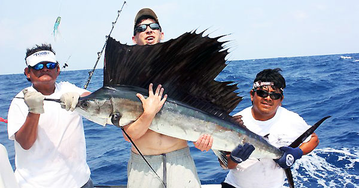
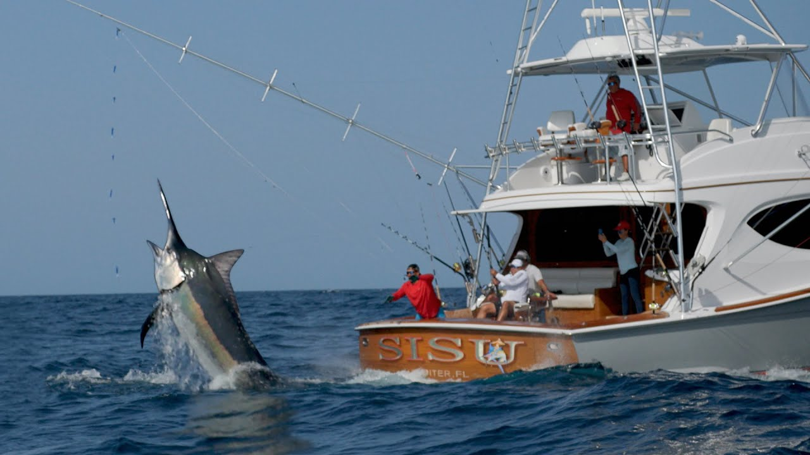
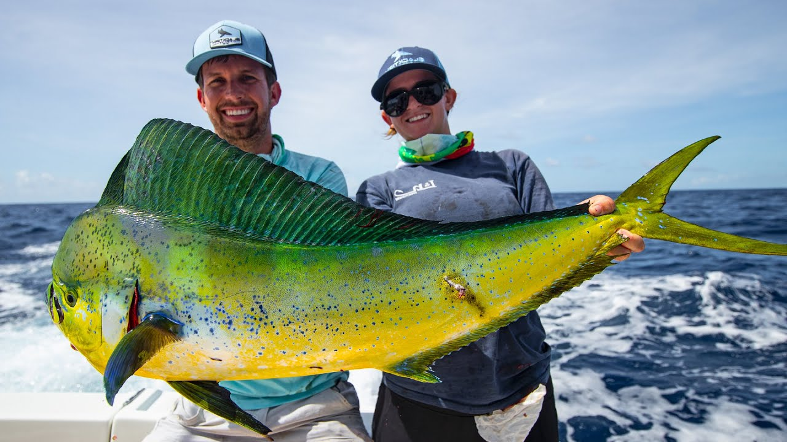

Deep sea
Deep sea fishing is an adventure like no other, where the vast expanse of the open ocean becomes your playground and the thrill of the unknown awaits beneath the waves. This exhilarating pursuit involves venturing far from the coastline into the deep waters, where a diverse and awe-inspiring array of marine life, from colossal billfish like marlin and sailfish to the majestic tuna and mahi-mahi, roam. The equipment is robust, the boats are sturdy, and the anticipation is palpable as anglers cast their lines into the abyss, hoping for a breathtaking encounter with a trophy-sized catch. It's a test of both physical endurance and mental fortitude, as battles with these powerful fish can be arduous and unpredictable. Deep sea fishing is not just about the thrill of the chase; it's about the camaraderie among fellow anglers, the breathtaking ocean vistas, and the profound sense of connection with the vast, untamed world beneath the surface. Whether you're a seasoned angler or a newcomer, deep sea fishing promises an unforgettable and adrenaline-pumping experience on the high seas.

Deep sea fishing is also a rich cultural experience that often brings together people from all walks of life who share a passion for the ocean and its inhabitants. It's a pursuit steeped in tradition and stories of epic battles with leviathans of the deep. The camaraderie among anglers on the boat, as they swap tales of the ones that got away or the legendary catches of the past, adds an extra layer of enjoyment to the adventure. The fishing trips are often led by experienced captains and crews who possess an intimate knowledge of the ocean's currents, tides, and the best spots to find the elusive trophies. They provide valuable guidance to ensure a safe and successful expedition, making deep sea fishing accessible and enjoyable for both novices and seasoned veterans. Whether you're seeking the serenity of a quiet day on the water or the excitement of a high-stakes sportfishing competition, deep sea fishing offers an extraordinary blend of adventure, culture, and connection with the marine world that few other activities can match.
